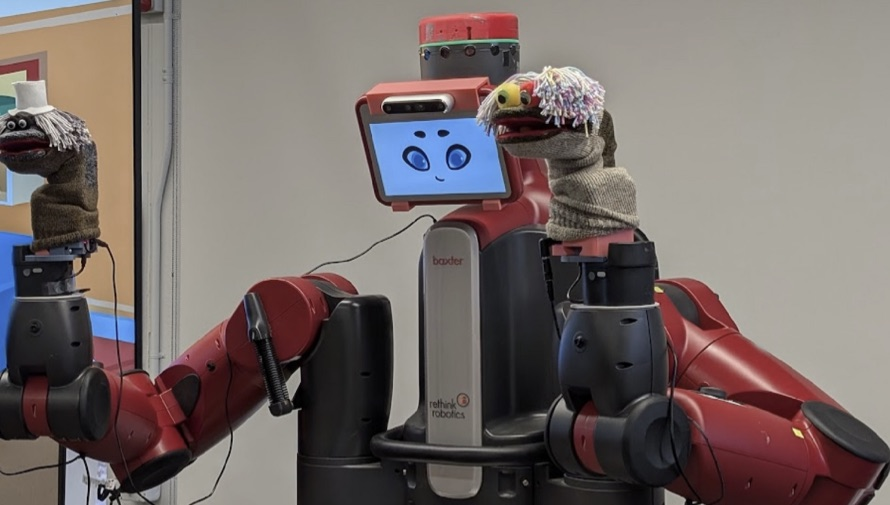

Expressive storytelling robots
Robots that perform stories through puppetry, voice, and gesture. Physical, playful characters can hold attention and help people remember, with a long-term focus on child-centered learning.
Hi, I'm Chester. I'm a PhD student in human-robot interaction at Case Western Reserve University. I design social robots that people actually want around.

I'm a second-year PhD student in Electrical, Computer, and Systems Engineering at Case Western Reserve University, working in the SaPHaRI Lab at the Human Fusions Institute with Prof. Alexis E. Block.
My research asks what it takes for people to feel at ease around robots, and I answer it by building them: prototyping, testing with people, and iterating with user-centered design. Before Cleveland, I earned a dual B.Eng. in Smart Materials Technology and Robotics & AI at KMITL in Bangkok, Thailand.
Robots that perform stories through puppetry, voice, and gesture. Physical, playful characters can hold attention and help people remember, with a long-term focus on child-centered learning.
What makes a robot feel social? I'm working on how human-robot interaction research defines, designs, and measures sociability, so we can build and compare social robots on firmer ground.